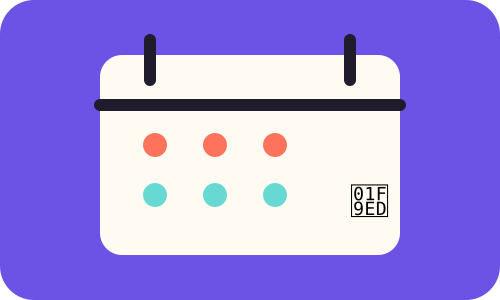

MODULE 05 · 09
🗓️ Gestión del tiempo

SUBSECCIÓN
Haz visible tu intención
Organizar el tiempo digital no significa eliminar la tecnología. Significa hacer visibles tus prioridades y decidir qué actividad merece tu atención primero.
Fuente / respaldo
UNESCO (2023), Global Education Monitoring Report: Technology in education.
UNESCO (2023), Global Education Monitoring Report: Technology in education.
Mini plan de hoy
0 elementos marcados